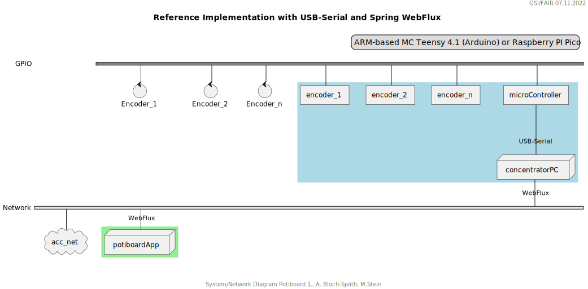

|
|
ACO - Application Support (APS) |
Einbindung dieser Arbeit in das laufende Projekt FCC Digital Potiboard
Die hier beschriebene Technologie-Evaluierung dient als Grundlage zur Entscheidungsfindung zu den in der Abbildung: Status FCC Digital Potiboard markierten Major Milestones und Subprojects / Tasks.

Figure 1. Status FCC Digital Potiboard
Rückblick und Motivation
Der vor ca. 6 Jahren entwickelte Potiboard-Prototyp wurde in einem der vergangenen Potiboard-Meetings als unzureichend in seiner Technologieauswahl eingestuft. Insbesondere der Einsatz einer "closed source library" des benutzten Phidget-Mikrocontroller, der zur Verarbeitung der Encodersignale dient, wurde kritisiert. Dessen Treiber läuft zudem nicht im "Userspace" auf dem zu benutzenden Linuxderivat, was aus system-administrativer Sicht ein Nachteil ist.
Eine weitere Anforderung der Zukunft (FCC) könnte sein, dass die Drehgeber ihre Inkremente an eine Potiboard-App über eine nicht unerhebliche Entfernung übermittelt werden müssen. Diese Anforderung ist bis zum jetztigen Zeitpunkt noch nicht festgelegt und wurde beim alten Potiboard-Prototyp gar nicht diskutiert.
Vom alten Potiboard-Prototyp übernommende Technologieentscheidungen und neue Wege
-
Optische "Rotary Quadrature Encoder" wurden wieder wegen ihrer Signalqualität, Zuverlässigkeit und Verfügbarkeit eingesetzt. Auf kugelgelagerte Modelle wurde diesmal verzichtet (Haptikgründe wegen zu hoher Leichtgängigkeit).Merkmale sind 16-128 Pulse pro 360-Rotation, keine Zahnung, 5 V. 3.3V Modelle waren auf dem Markt nicht erhältlich.
-
Beispiel-Encoder sind:
-
Grayhill 63R128
-
Bourns ENA1J-B28-L00128L
-
-
Durch den Einsatz von modernen Mikrocontrollern, deren Spannung an ihren I/O Kanälen häufig auf 3,3 V limitiert ist (anstatt 5V), schränkt sich dich Auswahl der möglichen Endcoder-Modelle deutlich ein. Eventuell müssten die Encoder-Ausgangsspannungen an den Eingängen der Mikrocontroller mit Pegelumsetzern (Level-Shifter) angepasst werden, wenn 5 V Encoder-Modelle eingesetzt werden müssen.
-
Es wurden wieder Mikrokontroller evaluiert, die die Inkremente der bis zu acht (8!) Encoder, ohne spürbare Zeitverzögerung, weiterverarbeiten können. Statt des im alten Prototypen verwendeten Phidget-Mikrocontroller (1047) wurden folgende Mikrocontroller stattdessen betrachtet:
-
Raspberry Pi 4
-
STM32H7, STM32F7
-
Teensy 4.1 (Arduino kompatibel)
-
Raspberry Pi Pico
-
Alle drei Systeme stellen nachbaubare Hardware dar (Ersatzteilversorgung scheint gesichert) und lassen sich mit Open-Source Hardware betreiben. Pro Einheit bewegen sie sich in einem Kostenrahmen von 30-100 US $. Der Mikrocontroller-Code zur Weiterverarbeitung der Encoder-Inkremente muss bzw. musste in C oder Python geschrieben und gewartet werden.
Sammlung von diskutierten Anforderungen (Stichwortliste)
-
Lebensdauer und Wartbarkeit Hardware
Die Funktion der eingesetzten Drehgeber und Mirkocontroller muss durch Verfügbarkeit am Markt oder durch Reserveteile-Einlagerung für möglichst mehrere Jahrzehnte mit finanziell überschaubarem Aufwand absicherbar sein.
-
Lebensdauer und Wartbarkeit Software
Die eingesetzte Software auf Mikrocontroller und auf Potiboard-App Seite sollte aus möglichst gut gepflegten und verständlichen Open-Source Projekten mit hoher Verbreitung stammen. Dies kann auch Auswirkungen auf die Wahl des Mikrocontrollers haben. Der notwendige selbst geschriebene Soure-Code sollte möglichst einfach wartbar sein.
-
Geschwindigkeit Signalübertragung
Die vom Nutzer über den Drehgeber zum Mikrocontroller und dann in das Java-Programm sollte mind. zwischen 1 ms bis 10 ms (0.1 Hz - 1 Hz) liegen.

Figure 2. Test-Implementation 1
Es wurde ein Referenzsystem, wie im oberen Bild dargestellt, auf Basis eines Teensy 4.1 Mikrocontrollers entwickelt, der die Inkremente der Encoder in hoher Geschwindigkeit bis in eine Beispiel-JavaFX-Applikation weiterreicht. Das Referenzsystem kann in einem späteren Meeting genauer vorgestellt werden.
Die im Referenzsystem eingesetzte Datenübermittlungstechnologie basiert auf der Technologie Spring Webflux und dem "Reactive Toolkit" Project Reactor. Sie wurde ausgewählt, da sie der "GSI Controls Server-Technologie" entspricht, die für die Operating-Applikationen im FCC und HKR eingesetzt werden soll und teilweise schon eingesetzt wird.
Ein Nachteil und in mancherlei Hinsicht sicher auch Vorteil dieser Architektur ist die Einführung eines Webflux-Servers (siehe Bild EncoderPositionsServerPC), der ein PC-System mit Controls-konformen OS sein sollte. Es ist also eine Schicht (Tier) notwendig, um die Inkremente der verschiedenen Encoder (z.B. im WebFlux-Format) zu versenden.
Auf der Habenseite dieser Architektur steht die Anpassbarkeit und Wartbarkeit nach den Richtlinien der Controls Abteilung und damit eine sichere, kontrollierbare Netzwerkkommunikation im ACC-Netzwerk auf lange Sicht und keine Insellösung im ACC-Netz.
Noch in Evaluierung stehende alternative System-Architekturen und Technologien

Eine vereinfachte Architektur könnte der Einsatz einer "leichteren Netzwerk-Übertragungstechnologie" (im Vergleich mit Spring WebFlux) mit sich bringen. Ein Kanditat ist zum Beispiel die Technolgie ZeroMQ, die sich von einem Raspberry Pi 4 aus leicht einsetzen läßt. Ausstehend sind noch Evaluierungen der Netzwerkkommunikationsmöglichkeiten mit dem leistungsfähigen STM32 Micro-Controller.
Fazit
Das Ziel dieser Technologie-Evaluierungen und Grundlage für eine neue Potiboard-Generation ist die Gegenüberstellung von mind. zwei möglichen Lösungen und deren Vergleich in Bezug auf Faktoren wie Kosten, Laufzeitverhalten, Wartbarkeit, System-Lebenserwartung, usw..